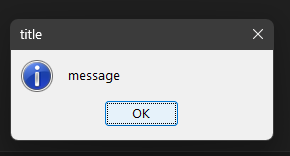
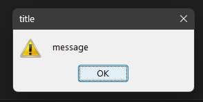
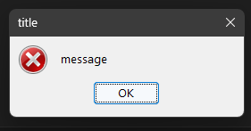
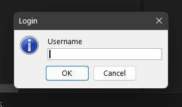

Start
Install epi
References —
cmos
in
var
File Work
Time
Import
Get Char
Print C.
Networking
Functions
Dialogs
Loops
Documents
Here you can view some tutorials of how to code in epi.
Warning: Recomended version: v_0.4 or higher. It has important bugfix, implementations, and accesibility.
Installation
In this tutorial you will learn hos to download epi.
- Download epi: Here you have the download link.
-
If you downloaded the compiler file:
- Move the downloaded file to a new directory
- Copy the new directory direction. (ex: C:/users/cat/desktop/epi/)
- Edit the all users path variable and add the directory
- Open the installer.
- Select with which privileges install epi
- Select a language
- Read and accept license.
- Read information about install.
- Click install
- Installed, click on "Run epi and close".
- Add the installation path to your user variables.
- Now you have installed epi!
- Create a new file on Visual Studio Code((R)Microsoft) or your text editor.
- Write on it:
print("hello world!") - Save the file as "helloworld.epi"
- On CMD/Powershell input
epi helloworld.epi - It should run well, if it don't, repeat the installation process
print function gets the content inside the () and shows it on the screen.
Added in: v_0.1
Usage on v_0.1^
print(textToPrint)
Example: print("Hello World")
Output:
Hello World
Cmos
cmos is a function that runs a specified command on command prompt.
Added in: v_0.1
Usage on v_0.1^
cmos.commandToRun(args)
Example: cmos.gcc("--version")
Output:
gcc.exe (Rev6, Built by MSYS2 project) 13.1.0
Copyright (C) 2023 Free Software Foundation, Inc.
This is free software; see the source for copying conditions. There is NO
warranty; not even for MERCHANTABILITY or FITNESS FOR A PARTICULAR PURPOSE.
In
in is a comamnd to get a user input.
Added in: v_0.1
Usage on v_0.1^
in(message, (variable)saveIn)
Example: var username null
in("Enter username: ", "username")
Output:
Enter username: ▮
Var
var command works for store information as a string.
Added in: v_0.1
Usage on v_0.1^
var name value
Example: var user null
It can be called by var(varName). The varName should be without ""
Output:
no-output
File Working
openf, readf, writf and relif commands works for working with files.
Added in: v_0.2
Usage on v_0.2^
// Create the file variable
var file null
// Open the file
openf("file", "filename.txt")
// Use your code as normal
Creating and writing files:
Example: //Create the file variable
var file null
//Open the file
openf("file", "hello.txt")
//Write on the file
writf("file", "This is hello.txt file contents!")
Output:
no-output
Reading files:
Example: //Create the file variable
var file null
//Open the file
openf("file", "hello.txt")
//Create the veriable in where we're going to save the text
var txt null
//Read file and save it
readf("file", "txt")
//Print the result
print(var(txt))
Output:
This is hello.txt file contents!
Reading a specific line on files:
Example: //Create the file variable
var file null
//Open the file
openf("file", "hello.txt")
//Write a multiline text on file
writf("file", "hola\nque\ntal")
//Create the veriable in where we're going to save the text
var txt null
//Read the line 2 and save it
relif("file", "txt", 2)
//Print the result
print(var(txt))
Output:
que
Time
gettMinutes, gettHours, gettSeconds, gettMilliseconds, gettDay, gettMonth and gettYear commands works for getting actual time.
Added in: v_0.2
Usage on v_0.2^
var minutes null
gettMinutes("minutes")
print(var(minutes))
Output:
Getting seconds, minutes and hours like this: HH:MM.SS
//Create the variables which store the time
var hours null
var minutes null
var seconds null
//Get the time and set it to the variables
gettHours("hours")
gettMinutes("minutes")
gettSeconds("seconds")
//Print it on the specific format
print(var(hours) + ":" + var(minutes) + "." + var(seconds))
Output:
Getting day, month and year like this: DD/MM/YYYY
//Create the variables which store the time
var day null
var month null
var year null
//Get the time and set it to the variables
gettDay("day")
gettMonth("month")
gettYear("year")
//Print it on the specific format
print(var(day) + "/" + var(month) + "/" + var(year))
Output:
Import Functions
epi uses a special command to import libraries.
You can use this command to import yours java or executables files and run it on epi.
To edit the commands you edit the file in the epi main folder. (imp.epilib)
Added in: v_0.3
Usage on v_0.3^
C:/Program Files(x86)/epi-v_yourepiversion/imp.epilib
;printText;echo;
Syntax
;printText;echo; Name to call the function
;printText;echo; Command to run
main.epi
var output null
printText("hi", "output")
print(var(output))
cmd:
epi main.epi
Output:
hi
Get Char
You can use getcha function to get a pressed button by the user.
Added in: v_0.3
Usage on v_0.3^
var key null
getcha("key")
print("User pressed: " + var(key))
Output:
h▮
User pressed: h
Note: You can use printc for no new-line print.
Print Compact
You can use printc for putting no new-line after print.
Added in: v_0.3
Usage on v_0.3^
var key null
printc("Press key: ")
getcha("key")
Output:
Press key: ▮
Networking
In v_0.3, there is a way to import files made up in java. So intallation of v_0.3 includes some files to send messages to servera or recieve mesasges. You can use netw.createServer and netw.createConection.
Warning: Java 21^ must be installed to use this function.
Added in: v_0.3
Usage on v_0.3^
Create a Server to Recieve Text
main.epi
var data null
netw.createServer("2288", "data")
print(var(data))
netw.createServer Syntax:
netw.createServer <- Create the server"2288" <- Select the port where we're going to create the server"data" <- Where to save the recieved text.Create a Connection and Send Text
sub.epi
var data null
netw.createConection("2288 supersecretip hi", "data")
print(var(data))
netw.createConection Syntax:
netw.createServer <- Create the server2288 <- Select the port where we're going to connect.supersecretip <- The ip of the server where we want to connect.hi <- Text to send.main.epi Output:
hi
Function
For creating functions you can create them by using openFunction, closeFunction and runFunction.
Added in: v_0.3
Usage on v_0.3^
main.epi File:
var function null
openFunction("function")
print("hi")
closeFunction()
runFunction("function")
Output:
hi
Dialogs
You can create dialogs to warn the user of something visually or getting userinput.
Warning: Java 21^ must be installed to use this function.
Added in: v_0.rev1
Usage on v_0.rev1^
Create Normal Dialogs
There are three types of dialogs:showMessage A dialog with an info iconshowWarning A dialog with an warning iconshowError A dialog with an error icon
Here is the use:
showMessage:
var output null
// output variable might be required to trobleshotign
gui.showMessage("message title", "output")
Output:
showWarning
:
var output null
// output variable might be required to trobleshotign
gui.showWarning("message title", "output")
Output:
showError
:
var output null
// output variable might be required to trobleshotign
gui.showError("message title", "output")
Output:
Create UserInput Dialogs
var username null
// You can't enter spaces on dialogs (maybe later yes) *username variable stores the entered text
gui.requestInput("Username Login", "username")
print(var(username))
Output:
Loops
In epi there's a way to do loops, but you have to determinate how much times repeat it.
Added in: v_0.rev1
Usage on v_0.rev1^
main.epi File:
//First define function
var function null
openFunction("function")
print("hi")
closeFunction()
runFunction("function")
// now use this
repeatTim("function", 10)
Output:
hi
hi
hi
hi
hi
hi
hi
hi
hi
hi